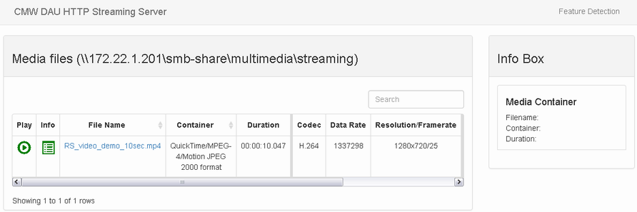
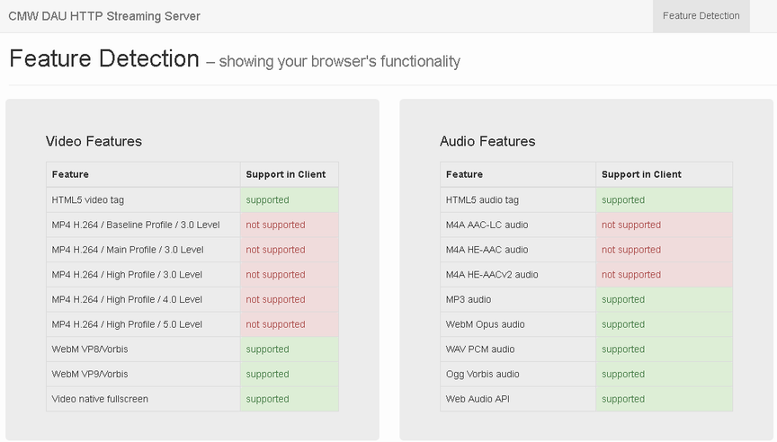

You can use the web portal of the DAU to test video streaming with your DUT. The videos available for streaming are listed on a separate streaming server web page. To access the web page, click the menu entry "Streaming Server" in the web portal. To access the web page directly, use the web portal address plus /streaming, for example http://172.22.1.201/streaming.

The page lists all available videos and their most important properties.
- To start streaming, tap the play button of a video or tap the file name.
- To display detailed information about a video, tap the info button of a video. The information is shown on the right in the "Info Box" area.
- To filter the video list, enter a term into the "Search" field. All rows that do not contain the search term are hidden. The search term can be contained in any column.
- To check the capabilities of your browser or app, tap "Feature Detection". A page is displayed, listing the video and audio capabilities.

Feature detection page at http://<web portal IP address>/streaming/feature-detection
The standard installation includes video file examples. To add your own video files to the web portal, store them on the samba share of the DAU, in the directory multimedia/streaming. You can organize your videos in subdirectories.
The following video container formats are supported: MOV, MP4, WEBM and MPD (for MPEG-DASH).
If you store DASH videos on the samba share, keep the files of a video together in the same directory. And use a separate directory for each DASH video.